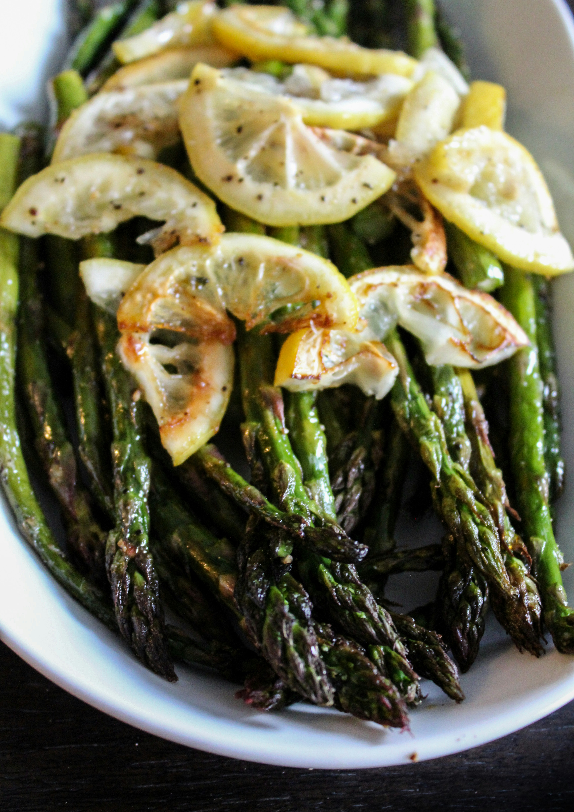

Sauteed Asparagus

INGREDIENTS
- Asparagus, with ends cut off
- Avocado oil
- Garlic cloves, peeled, sliced thin
- Dried parsley
- Dried fenugreek
- Lemon
- Salt
STEPS
- Sauté asparagus over medium heat with fenugreek, garlic, parsley, and avocado oil.
- Add small amounts of water throughout cooking process.
- Add lemon and salt after fully cooked.
HOME